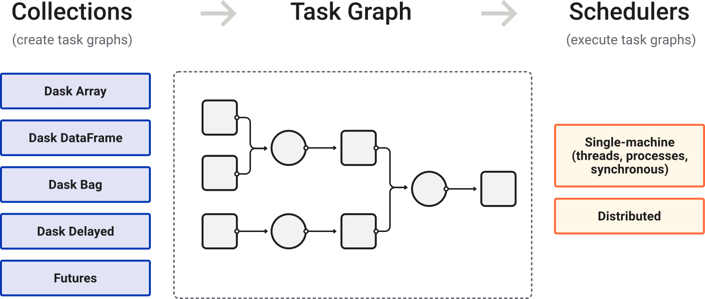

Update 2026-06-19: I totally rewrote this post again, spurred on by a single comment from Juan Luis Cano Rodríguez, that I didn’t explain what domain modeling was. Right, of course.
Update 2026-03-06: I first wrote this back at the start of 2025. Now I’ve rewritten and broken this post up into two, one here and one on the VocalPy developer’s blog, based on feedback from folks in the US-RSE and pyOpenSci communities: Ben Fulton, Hector Correa, Kris Armeni, Warrick Ball, and Felipe Moreno. Special thanks to Alex Chabot-Leclerc for reading closely and talking through the earlier version.
I know this is a long post. You might think I need to learn to write for a short attention span. I have tried to write short versions of this post. But I keep thinking all the things I talk about here are connected, so I am making myself write it all down, to see if I’m making a mountain out of a molehill or not. This is why we write, instead of asking a statistical model of language to generate a bunch of text for us. Also, I would like to do everything possible to resist the impact that antisocial media and other tech has had on our attention spans But as a concession to our shortened attention spans, I will write an overview with links to relevant sections.
In this post I hope to convince you that scientific software should focus on domain modeling more. That opening sentence might make you think that you are not the intended audience for this blog post. So first let me tell you that at the end of the post I am going to argue that everyone is a scientist, so we should all care about how our models of the world get implemented in code. In case you think that’s ridiculous, let me put it another way. You should read this post even if you think you don’t care that much about scientific software, because even though I start out talking about how I surprised I am that scientific software rarely if ever talks about domain modeling, I am going to end up convinced that what I have to say applies to software more generally. Scientific software is just a specific case of a more general phenomenon.
Domain model. I keep using that term. If you are a scientist, you might naturally think that scientific software has a lot to do with (scientific) models already. And if you are a computer scientist, you might similarly think that of course scientific software is built around domain models, based on your understanding of that term. I will define domain modeling below. And I will argue that, if you are already familiar with that term, then everything you know about domain modeling, and related topics like object-oriented programming, is wrong.
And I will conclude that this actually matters, that if we want computer scientists and all the other scientists to work together better, we should make these domain models super explicit. And, again, I think this is true more generally
of software developers and the downstream users of that software, who I think we can agree should ideally be in dialogue with the core developers (unless you are a little fascist that wants to jail users in a walled garden, in which case, when you’re ready to join the human race, we’ll be out here). There’s two reasons that domain models matter. The first reason is fairly obvious, and probably lines up with your understanding of the term “domain model”: by focusing on a domain model, we design software with affordances that most fit the task at hand. This is best made clear by looking at some examples of what I would call “domain-oriented code”, even if the people who wrote the code would not say they were “doing domain-driven design”. The second reason is less obvious, and, I hope, more interesting: domain models serve as boundary objects that allow broad groups of workers with loosely-aligned interests to collaborate. (I’ll also define what a boundary object is.) To make this point, I will provide examples from actual libraries I work with that I think show how software engineers working in different “sub-domains” of computer science are actually using domain models as boundary objects. I will also give an example to show how I think surfacing these domain models, really putting them front and center in the documentation, could actually help users work with the libraries.
Let me say right here at the top that I am not claiming any of these ideas are new, or my own. But I think they very much bear repeating.
I will give detail and links below but please know I am stringing my thoughts together from several people: Eric Evans Domain-Driven Design, Casey Muratori’s recent talk The Big OOPs, Peter Naur’s Programming as Theory Building, books and papers from Susan Leigh Star, Bonnie Nardi’s A Small Matter of Programming, and several recent blog posts citing those earlier writings. Still, I am hoping that my focus here on scientific software has helped me synthesize these works in a way that is more interesting.
And when I say that I think these ideas bear repeating, I mean that I feel like the people who most need to hear them are the software engineers who seem to be all to eager to believe that they can replace themselves and many other humans with “A.I”. Yes, near the end of this I will relate domain modeling to “A.I.”, as is de riguer at the moment, and more specifically to so-called spec-driven development. And since the acronymn “AI” has lost all meaning thanks to tech industry hype, let me be clear that I am specifically talking about
“vibe-coding” with Large Language Models. If, as Peter Naur wrote, programming is theory building, then we should definitely not relegate programming to Large Language Models, since a model of language by definition cannot conceive of a theory. All it does is mindlessly generate code, no matter how much you want to believe otherwise because your all-too-human brain is hardwired to think that anything that can speak a language is as smart as you. I will argue that spec-driven development is not going to fix this problem, because a verbal spec is a contract between software engineers and other humans who are actually capable of understanding what it means, an interface if you will. The problem with a non-coder generating code from a prompt “spec” is that they don’t actually know what they want, and even if they prompt their way to an implementation that gives them the interface they want, they still won’t know if it’s a good or bad implementation.
A software engineer is a designer and an artist who translates the verbal spec into an interface.
and the software engineers are still responsible for the implementation. Since you could spend a lifetime understanding the infinite trade-offs that are possible at every level of modeling up and down the stack, do you really want to abdicate that responsibility and —
Okay, with all that intro out of the way, let me go back to the question I started with: why doesn’t scientific software talk about domain modeling? If you’re a scientist, my question might have you saying
“uh, of cousre we have models in scientific software”. In other words, my question might not make any sense if I don’t quickly define domain model. You’re smart, you can guess what it means, but we have to be clear about this: it’s a term of art in computer science and software engineering. You will also hear the term “domain model” used in the tech community, where programmers go around giving talks, and where, more often than not, it can sound like shorthand for
“all the messy real-world stuff that my code must unfortunately interact with–if only I didn’t have to deal with those dang domains, my code would be provably correct with formal methods”.
More seriously, the term implies an abstraction that lets programmers separate the domain from the low-level implementation details of actual code. This abstraction allows users of the software to go about their business in their domain, while programmers are free to fiddle with the low-level details, as long as they don’t break the contract written into the domain model.
As somebody who thinks about research software, I think it sure sounds like a good idea to make it easier for scientists to reason about a (domain) model, while also making it easier for research software engineers to develop and maintain the code that supports that model.
If you’re familiar with computer science,
you will probably have already recognized that domain modeling is a specific case of a more general phenomenon: the interface/implementation duality. You might even be annoyed that I am missing this obvious point. You’re right; I’ll say more about this below.
But let me ask my question one last time. Why doesn’t scientific software talk about domain modeling?
One answer might be, actually it does, and I am just clueless. I would be more than happy to learn that I am wrong, but I have at least spent a good chunk of time interacting with the scientific Python ecosystem, and I’ve had a few run-ins with scientific software in other languages as well. Yet when I first learned about the idea of domain models in computer science, it was news to me.
Here’s two other easy answers to my question. The first: “Domain models? You mean like classes with methods in object-oriented programming? Don’t we all do that to some extent?” The second: “Domain models? You mean like messy business logic in CRUD apps? What does that have to do with scientific software?”
I will try to convince you that both answers miss the mark in interesting ways. I’ll say why domain models are not just object-oriented programming (henceforth, OOP). I’ll show that, quite the opposite, OOP is instead a direct descendent of ideas about how to write code for scientific simulations (thanks in large part to a talk from Casey Muratori)– a descendent that seems to have undergone some deleterious inbreeding as it made its way from academia to enterprise software. Then I’ll make the case that, actually, there’s plenty of messiness in scientific software; this business of science is not all just totally abstract models that have been whittled down to a couple of perfect parameters with Occam’s razor. Lastly, I will make good on my promise above to tie this back to programming more generally, and why I think it seriously is still worth thinking about the relationship of (scientific) software and domain models, in spite of all the hype about vibecoding.
What is domain modeling?
Enough preamble; finally I will define domain modeling in detail with specific examples. Sometime in 2022-2023, I read Domain-Driven Design by Eric Evans, and I got really excited about it. (From here on out I’ll write “DDD” to avoid making you read “domain-driven design” a thousand times.) If you do nothing else, read the first chapter of Evans’ book, where he relates the story of how he worked with some electrical engineers to design software they would use to design printed circuit boards (AKA PCBs).
At the beginning, he makes mistakes. He tries to understand their jargon word-for-word. Then he asks them to specify in detail what they think the software should do. Neither of those approaches were ever going to work well. Finally he hits upon the idea of asking them to draw out diagrams of their process and how the software should interact with it. These are simple, rough box and arrow sketches as he shows.

Notice what is happening here: this is not just a developer creating a UML diagram to show to other developers. This is software engineers and domain experts developing a pidgin language together. They use this pidgin to talk about the domain problem they are trying to solve with software.
It’s an interesting story for a couple of reasons. First of all, you have a feeling that he is almost an anthropologist, going into this unfamiliar tribe of electrical engineers so he can learn their culture. I think this is a familiar feeling for anyone who has tried to translate some real-world domain into software, even if it’s part of a culture they feel like they belong to. Second, you really get a feel for his process. If you have ever gone through the process of designing software for some real-world domain, I bet the story really resonates with you. You should also notice here that Evans and the electrical engineers are co-developing a boundary object: a thing they can both refer to,
that helps them work together to achieve some task, in this case design a piece of software that helps the electrical engineers develop circuits.
Now, you might be thinking, “write code in terms of your domain, yeah, sure, everybody does that”. I got really excited reading this stuff, and told people about it at the job I had at the time. I made a big deal of presenting parts of the book, and talking about how we could use this approach for what we were working on. And I got this very underwhelmed response of “Yeah, we sort of already do that. Aren’t you just describing object-oriented programming?” Yes, but no! I’ll come back to the “no, we aren’t doing that” below, but first, the yes. Yes, Evans is writing about object-oriented programming (henceforth, OOP), but the key thing is not just OOP, it’s which objects to make–the design! The important part is not the objects, but that the objects are grounded in the domain. We should realize that this is a design problem, and be very explicit about it! The domain should be at the front of our mind at all times, so that when we iterate on the design of our software it is easier for domain experts to learn and use!
Now, the “but no”: DDD isn’t just doing OOP, but constrained by your domain. Yes, we all think of the domain when we write our code, more or less subconsciously. But Evans advocates for a specific development process. He says this process is required for his approach to design to work. He sees it as a form of extreme or Agile programming. If you’re not familiar with those, the important thing to know is that they are more iterative than previous approaches that focused on “elaborate development methodologies that burden projects with useless, static documents and obsessive upfront planning and design”, as Evans puts it. Instead, he focuses on writing code that has a bare bones implementation he can test right away. “Development is iterative.” Of course, this is one place where Python, my main programming language, shines. It’s really easy to iterate interactively in a Jupyter notebook with a bare-bones implementation of your sketch of an API. Of course, later you should do some proper engineering instead of living in Jupyter notebooks, so you don’t have to worry about someone giving a preachy conference talk that condemns you for your naughty software development practices.
Evans’ other requirement for the development process is that “[d]evelopers and domain experts have a close relationship.” If you are a researcher who programs, well, hopefully you already have a close relationship with yourself. And with your collaborators and colleagues. This second requirement naturally gives rise to one of the key ideas from the book, that of ubiquitous language. This is what I called a pidgin above. It’s a language that the domain experts and software developers arrive at together through the iterative process of development. The words in this ubiquitous language correspond to key concepts in the domain that the software needs to capture, the things that developers and domain-experts realize they should focus on, as they iterate. Ubiquitous language “embeds domain terminology in the software systems we build”, as Martin Fowler puts it in this post. It’s this continous process of developer and domain expert iterating together that really appeals to me.
I’ll say why DDD isn’t just OOP another way, paraphrasing Alex Chabot-Leclerc (who gave me feedback on earlier versions of this post). Ideally, the software developer should work backwards from the needs of the end user. DDD provides a process and guidelines for doing so. This mitigates the tendency of software developers to come up with computer-science-shaped solutions to problems. Those solutions make sense to them, but they are very hard for non-computer scientists to learn and reason about. A scientist cares about concepts from their domain, technical terms that have very nuanced meanings. Do not make your end user think in terms of csv files, Parquet formats, and json blobs. It’s bad enough that I have to think so much about the format of csv files as a research software engineer; if at all possible I should ameliorate the need for other humans to do so.
Domain-driven design by example
If DDD is so great, why isn’t everyone doing it? In other words, you might be wondering what some examples of DDD are.
Let me first say I would be happy to learn that this is all old news to a lot of software developers. From my vantage point in the world of scientifc Python, I’m not so sure. I can give you examples of Python APIs that I could say have the “feel” of what I would expect DDD to produce, even if the developers did not think of themselves as “doing DDD”. I can also link to my own post explaining how I am trying to use DDD for scientific software (below), comparing and contrasting that with the (mostly implicit) rules for scientific Python APIs. But as far as I know, this is not a well-known idea (and maybe that means I shouldn’t bother thinking about it so much).
To give you an example of a DDD-like Python API, I’m going to quote directly from a post I’ve linked to before, in my post about structuring Python packages for scientific software. Ostensibly, the post I’m linking to is about API design for Python. It compares and contrasts the API of the requests library with the urllib module built into the Python standard library.
Let’s start with some code. What do you think this snippet does?
manager = urllib.request.HTTPPasswordMgrWithDefaultRealm() manager.add_password(None, 'https://httpbin.org/', 'usr', 'pwd') handler = urllib.request.HTTPBasicAuthHandler(manager) opener = urllib.request.build_opener(handler) response = opener.open('https://httpbin.org/basic-auth/usr/pwd') print(response.status)As you probably figured out, it makes an HTTP request to an httpbin.org URL with a username and password.
But is urllib.request a good API?
No, it’s terrible! You have to learn about “managers” and “handlers” and “openers”. There are two ultra-long names, HTTPPasswordMgrWithDefaultRealm (what a mouthful!) and HTTPBasicAuthHandler.
This kind of code is why the Requests library was born, back in 2011. In fact, if you’ve looked at the Requests documentation, you probably know that this example is taken from the comparison linked at the top of their docs (updated based on an official how-to).
Here’s how you’d make that same HTTP call with the Requests API:
response = requests.get('https://httpbin.org/basic-auth/usr/pwd', auth=('usr', 'pwd')) print(response.status_code)Now that’s a nice API.
From a DDD point of view, the important thing here is that the requests API is designed at the level of detail that someone working with HTTP requests is thinking about. They make a request, they get back a response. (Thank you again to Alex Chabot-Leclerc, this time for suggesting requests as an example.)
Wait; is email a domain? Isn’t it just a weird sub-field of computer science, kind of like how cooking and baking could be considered sub-fields of organic chemistry? Yes, you’re right. I’m telling you that you should think about DDD more, but I can’t give you many good examples of it. The other example Alex suggested to me was beautifulsoup, and I agree that package has a user-centric API, but now we’ve moved from email to another weird branch on the family tree of computer science: HTML and XML. The best example I have is my own blog post on how I’m using DDD as I develop VocalPy. The second best example I could think of in scientific Python was geopandas. What I like about geopandas is that it has the feel of a library designed by a domain expert, adding a bunch of methods to the pandas.DataFrame that make sense to someone working with geospatial data. Generally, I think a lot of pyOpenSci packages could be seen through a DDD lens. But I’m pretty sure most developers don’t think of themselves as “doing DDD”. In earlier versions of this post, I had a mini-rant about, if you feel like everybody already does DDD, then show me the proof! Put the DDD-style diagrams in your docs, let me see how the design evolved! Literally I was advocating that researchers writing scientific software include DDD-style diagrams in their docs, that specifically illustrate changes over time. Okay, maybe adding an illustrated history of your API to your docs won’t help users much. But I do think it would be really interesting, if you care about the design of scientific software, to look at a big dataset of how design docs change across time for multiple projects. This would be one way to see if we can make better sense of scientific software design through a DDD framework.
One last thing I want to say here is that https://nrposner.com/blog/affordances-in-library-api-design/
Object-oriented programming as a mutant descendent of domain modeling
Ok, so in the introduction I said that domain models in software engineering are, arguably, just one more case of the distinction between interface and implementation that we see everywhere in computer science. If you read [Elements of Computer Science], you will be told that this distinction exists even at the lowest level of simple logic gates, where an And gate has the “interface” of the truth table you might have seen in a Philosophy 101 course, but its implementation could be Nand gates or Nor gates, or something else entirely. Bjorne Stroustrop thought this distinction was so important that he hard-coded it into C++, with the public and private keywords, and its one of the first things he tells us in his PPP book.
I also said above that I have gotten the reaction, “domain-driven design? Isn’t that just object-oriented programming?” (henceforth, OOP). This is why I mention Stroustrop; you will of course know that his development of C++ began life as “C with classes”, and he is one of the reasons that OOP ruled the software engineering world for roughly thirty-five years.
This is the part of the post where I tell you that everything you know about object-oriented programming is wrong.
Actually, I will let Casey Muratori tell you, since that is (one of) the point(s) of his excellent talk.
One big takeaway for me, given everything I’ve discussed above, is that OOP is actually a sort of mutant cousin of domain modeling. It’s what happened when the good ideas behind OOP got corrupted by a game of telephone running from academics doing research to software engineers developing “enterprise” software for large businesses.
You should watch the whole thing, but I want to summarize some key points
But we can go beyond this and say, from the beginning, computers were developed in large part by scientists and researchers in academia. We have to remember, there was no computer science yet, so the men and women who developed computer circuits and programming languages brought together a wildly diverse background, creating a “primordial soup” of ideas that the von Neumann architecture emerged from, as the authors of Dive into Systems put it. Of course some of the first things these scientists did was implement models from their scientific domains in software.
Just to really underscore the idea that domain modeling has been around long before object-oriented programming, let me quote one more book, Structure and Interpretation of Computer Programs, AKA, SICP. If you have ever tried to teach yourself computer science, you will be familiar with SICP, and in particular that it uses the Scheme dialect of Lisp. Wikipedia tells us that Lisp “is the second-oldest high-level programming language still in common use”, so, no, it doesn’t have objects per se, although of course people have defined them
So, from chapter 3 of SICP:
One powerful design strategy, which is particularly appropriate to the construction of programs for modeling physical systems, is to base the structure of our programs on the structure of the system being modeled. For each object in the system, we construct a corresponding computational object. For each system action, we define a symbolic operation in our computational model. Our hope in using this strategy is that extending the model to accommodate new objects or new actions will require no strategic changes to the program, only the addition of the new symbolic analogs of those objects or actions. If we have been successful in our system organization, then to add a new feature or debug an old one we will have to work on only a localized part of the system.
Likewise, domain modeling is not a new idea (as Evans himself acknowledges right at the start of his book), I now know for sure they’ve been around longer than Eric Evans’ book, because I have been attempting to read yet another book,
I ended up finding DDD in SICP, and having to admit to myself that, yeah, this idea has been around forever. When I got to chapters 2 and 3, there I saw that we were talking about data abstraction and designing programs for modeling. Sound familiar?
Well there it is.
Domain models as boundary objects
Not to belabor the point, but I’ll stick in a couple more examples of architecture diagrams from docs that I have noticed since I’ve been revisiting this idea. Two things I want to say here: the first being that, while it’s good that these diagrams exist, you often have to dig to find them. So, again, I’m not saying I have a revolutionary idea; I’m just wondering if we could surface this stuff a little more.
Here for example is a diagram from the “internals” section of the dask docs on scheduling, illustrating the two types of schedulers:

And here is a diagram from the “architecture” section of the mlflow docs, illustrating common setups:

The second thing I want to say here is: I think you can see these diagrams differently. They show software engineers doing domain-driven design. At the risk of sounding like I’m preaching that “everything is domain-driven design”, I’ll say that this looks to me now like software engineers designing for a domain using an ubiquitous language, one spoken by the other engineers they work with, and the engineers that use their libraries. They speak in terms of “abstractions” and “architectures”. (This is me returning to the point above about software engineering being a domain.)
At the end of the day, a scientist using scientific Python only cares about a Numpy array inasmuch as it makes life easier when they do an analysis.
If that’s so, then show me the doodles! Like Evans’ box-and-arrow diagrams above. Show me your mental model of your domain. Put it in your docs! Let me read it, let me actually see these schematics, even if they are just doodles, it helps me to know how your thought process evolved. All I can see right now is this insurmountable mountain of code. I don’t even know where the hiking trail starts so that I can scale the mountain! I know that there are examples of people doing this, e.g., in the scientific Python community where I spend most of my time, but I think it’s fair to say that this is not the norm. (Thank you to Warrick Ball from US-RSE who shared a good example of domain-driven design from his aims3 docs) I don’t know that I have ever seen diagrams showing how the design evolved, as part of an iterative development process. I can’t help but feel like that’s exactly the sort of thing that could help people get up to speed on how the code works.
Just to make this real concrete, I’ll give one example from my world of scientific Python. With this example, I want to show first of all that, yes, people definitely work this already, even if they don’t call it domain-driven design. And, second, that we could make this design process easier to find, and use it in a way that makes code easier to understand. My example is: the numpy n-dimensional array, that we’ll call ndarray for short. This is the core abstraction tha makes all of scientific Python possible. How do the developers of NumPy conceive of the ndarray? Of course, if you go to the “Getting Started” section, you can get a written introduction, arguing for why we need an n-dimensional array in Python, and showing you some code snippets. Great. But I want a drawing. Like the doodles above. A picture is worth a thousand words. So if I make it down to the bottom of that page, I can find a link to the NumPy reference, and there finally if I click on array objects, I can find this picture:

I think a diagram like this would help a beginner understand what an ndarray is!
And I can’t be the only one, since Nicolas Rougier has written a whole book about going from Python to NumPy, and he starts the book with these kinds of diagrams.


Similarly, the Software Carpentry course Programming with Python uses a diagram to illustrate how numpy.max function works. (If you look up the numpy.ndarray.max method, you’ll be directed to the numpy.max page.)

Every time I have to remember which axis is which, I find myself wishing the NumPy docs had a diagram like this.
More to my point above: I want to know how the design of the ndarray evolved! How did a group of developers come together from packages like numeric and arrive at a new design? What did they recycle, and what did they throw away? If I look at the “Under-the-hood documentation for developers”, I don’t find any of this. Of course you can argue that this might seem like too much detail for developer docs. If I’m a developer and I’m just trying to figure out how to subclass ndarray, do I really need to know the whole history of your library? Yet I know this stuff exists, on GitHub issues for example, as part of the design and development process. So maybe it’s worth keeping a record of how things evolved somewhere in your documentation? And making that more readable with diagrams.
Please let me emphasize that I am not trying to call out Numpy here, or make an example of them, or anything like that. I know how much work and how many volunteer hours go into maintaining NumPy, and building the community around it. A lot of those people are my friends from conferences. I just want to give some sort of concrete examples. In their defense, we can notice that NumPy is so widely used that it was easy for me to find these examples. I am just wondering what else we can do as research software engineers to make libraries more approachable. Maybe it would help prevent snarky young kids from writing blog posts like this.
Domain modeling, spec-driven development, and vibe coding
Ok, so, first off, believe me, I’m well aware that there’s no shortage of thoughtfluencers opining about coding LLMs.
But since I rewrote and shared my post about domain-driven design DDD, I have to say a little bit about how domain-driven design relates the use of Large Language Models (LLMs) for coding.
I have to say that thinking about DDD has also got me seeing overlap with ideas like programming as theory building and domain-specific languages. They conceive of software as artifacts of human culture, designed for a domain and built according to a theory because that’s what humans do. To me, these ideas put the lie to the notion that Large Language Model-driven development will end software engineering as we know it anytime soon. A coding LLM is just a statistical model of (programming) languages, “auto-complete on steroids”. LLMs can’t think, they can’t theorize, no matter how many names you steal from cognitive science to give to the underlying math. Yes, as a (lapsed) cognitive scientist, I think “chain of thought reasoning” is an offensive name for what is essentially Viterbi decoding with delusions of grandeur.
One major point of the “Theory Building” post, and the papers it’s referencing, is that source code alone doesn’t matter as much as the domain expertise that has built up around the code. I choose the term “domain expertise” to link it back to DDD, but as a computational scientist I think we can literally describe programming as (part of!) theory building. Depending on your perspective, you could also call it institutional knowledge, culture, and history. You know, all the things that many software engineers seem to think they can replace with a coding LLM, i.e., autocomplete on steroids. Instead, it’s becoming more and more obvious that yet another externalized cost of relying on coding LLMs will be the cognitive debt we incur by YOLOing hundreds of lines of code from a fancy text generator just because it feels good, man.
Sure, but coding LLMs allow end users to formulate And end users still need a way to formulate their ideas, including those that don’t want to have to think too much about computer science, they . These notes from Jamie sum up why doing that via an LLM using natural language “prompts” is a bad idea: https://www.scattered-thoughts.net/notes/a-small-matter-of-programming/
In natural language interfaces, users have to learn the undocumented subset of their natural language that the machine understands correctly
See this quote from the introduction to “A Small Matter of Programming” (the book I just linked to, that considers task-specific languages, among other things):
![Screenshot of text from introduction. What interests me about these scenarios is not that they make fantastic, unrealistic promises (though I think they do), or that the instructions given by the user are couched in simple English (Tesler at least concedes that more structured languages may be needed), or that they embody such a grand vision (though the vision has much appeal). Rather, it is interesting that it is the programmer who is to control all of the computational magic. As Tesler says, programmers will endow computer-agents with their basic capabilities, even meeting such exciting challenges as programming the computer to know what users will think before they think it! By comparison, notice the relationship of the end user to the computer; the end user is engaged in the most humdrum activities: making queries regarding a phone conversation, asking the computer to set up an appointment, requesting articles from the library (Tesler, 1991). Now contrast this vision of the computer-agent with what Alan Kay (in the same issue of Scientific American) envisions for educational software: children writing simulations of complex natural phenomena such as biological and physical systems to better understand how they function. Kay's colleagues have created a simulation construction kit for children so that they can build their own simulations. The construction kit lets children write simple scripts that model animal behavior. Using the kit they can change parameters to see how changing conditions affect the animal. This use of computers is an instance of what Tesler called the personal implement: the children are doing nothing more or less than programming. With the kit, the children have tools that give them tremendous scope for intellectual exploration and personal empowerment.](small-matter-of-programming-screenshot.jpg)
(Thank you to Alistair Davidson who I saw post about this book on Bluesky, I’m recycling their screenshot and alt text.)
These ideas present an alternative to magical, god-like AI “agents” that do all the intellectual heavy lifting for software developers, and anyone else who does any kind of creative thinking for a living.
We need more domain modeling because we are all computational scientists now
- insert Jerry Seinfeld walking out of talk gif
- discuss perspectival realism, Michela Massimi